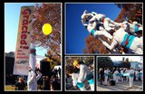

Benvinguts a la nostre pàgina web
Ja tornem a ser aquí amb vosaltres, després d’una llarga temporada plena d’actuacions i un merescut descans comencem nova temporada amb gent nova i nova direcció a la colla, esperant tenir com a mínim un mateix any com el passat ple de bones actuacions. El Falcons de Vallbona d’anoia ens estem re-inventant, fent noves figures per mostrar aquesta temporada 2014.
Les nostres figures
Tots els falcons tenim figures en comu i figures propies creades per cada colla.
Les nostres son:
- La Masia
- La Sardana
- La Maribel
- La Caixa de Nines
- La Font Dinàmica
Notícies
El dissabte 14 de Desembre del 2013 els Falcons de Vallbona d’Anoia vam estar al Zoo de Barcelona a la Campanya Posa’t la Gorra organitzada per AFANOC .
Durant tot el matí vam fer diferentes figures per tot el parc vam començar amb dues quadrigues... i dos pilars de tres, un avet molt ben executat i molt parat, uns avions de quatre i dos de tres, una escala de set, la sardana i la Maribel acompanyades d’un avió de tres i dues caixes de nines. Vàrem seguir amb la masia acompanyada de dos torres i dos espelmes petites, un con obert, un súper avió, les planxes rodades acompanyades de dos ventalls, una pira 3x3 de canalla, els lleons i una serra de set puntes amb un pilar de tres al mig que nomes vam poder carregar.
Per acabar després dels parlaments vam fer un con obert desplegant una pancarta de la campanya.
Estem molt contents d’haver pogut participar-hi va ser un gran dia on vam poder disfrutar molt d’aquesta experiència.